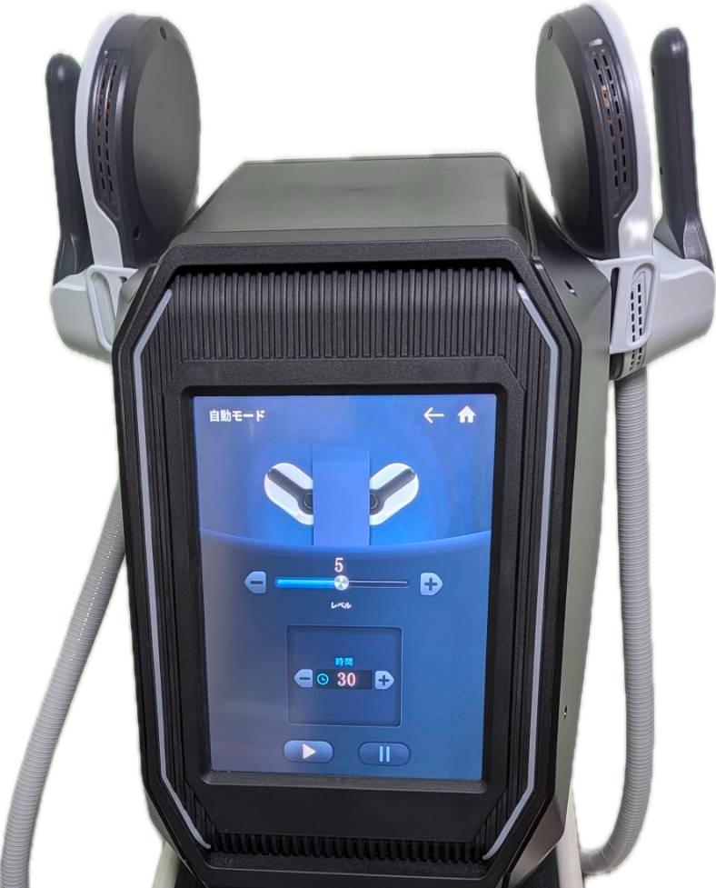
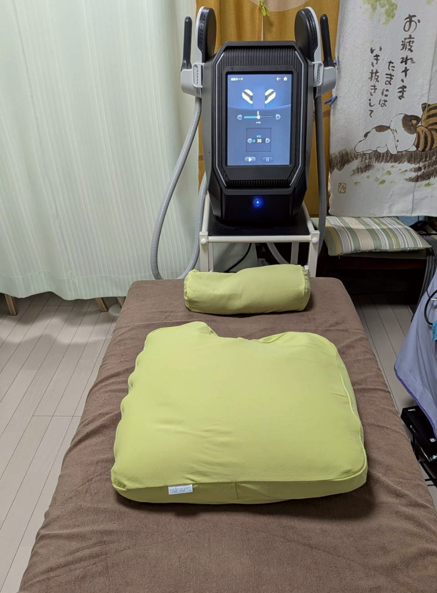
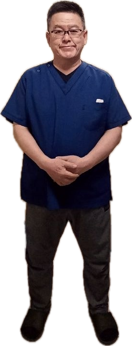
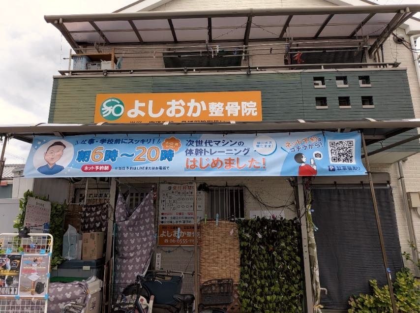

電磁パルスのトレーニング機器「テスラインパクト」で、骨盤底筋・体幹のトレーニングを受けていただけます。予約制なので、決めた時間に来て、そのまま始められます。
前日まではLINE・ネット予約、当日はお電話で受け付けています。ご質問だけでも、LINEでどうぞ。
仕事や家のことが先になるのは、自然なことです。行けていないのは気持ちの問題ではなく、時間が合っていないだけかもしれません。
仕事の前は慌ただしく、仕事のあとは疲れていて、休みの日は家のことで埋まる。だから、受付を朝6時からにしています。
月曜から土曜まで。予約制なので、待たずに始められます。
着替えは不要です。ふだんの服装のまま受けられます。
出勤前や、家のことが始まる前の時間に。
仕事の前の時間を、
ご自分の体のための時間に。
「整骨院は、ケガをしたときに行くところ」と思われがちですが、

骨盤底筋や体幹まわりのトレーニングに使う、電磁パルスの機器です。受けていただく前に、柔道整復師の院長がお体の状態とご希望を伺い、機器を使えない条件に当たらないかを確認します。
トレーニングだけのご利用もできます。ケガや痛みがなくても、お越しいただいて大丈夫です。
ふだんの過ごし方や、運動の習慣、気になっていること。話しやすいところからで構いません。
骨盤底筋・体幹まわりのトレーニングを行います。強さは、遠慮なくお伝えください。
続けるかどうか、どのくらいのペースで通うかは、生活のリズムに合わせて一緒に決めます。次の予約は、その場で取らなくても大丈夫です。
料金はすべて税込です。
「体幹を鍛えたい」の奥に、それぞれの目的があります。そこを先に伺うと、進め方がずれません。
子どもと一緒に体を動かしたい。仕事のあとも、もう少し動ける自分でいたい。人によってちがいます。
「体幹を鍛えたい」「運動不足をなんとかしたい」。多くの場合、ここから話が始まります。
動画を見て筋トレをする。ジムに入会する。一駅分歩く。
時間が合わない。一人だと、やり方が合っているか分からない。予約して、決まった時間に通える場所がない。ここを一緒に見ます。
「こうなります」とは申し上げません。
生活のリズムを伺い、そこに合わせて一緒に進めます。
まずはご都合のよい日時だけ、お知らせください。
はい。トレーニングだけのご利用もできます。
はじめにお体の状態を伺い、強さはその場でご相談しながら合わせます。
着替えは不要です。ふだんの服装のままお越しください。ベルト・時計・車の鍵・ネックレス・指輪などの金属類は、受ける前に外していただきます。ラメ入りの服など、熱を持ちやすい素材は避けてお越しください。
はい。完全予約制なので、お子さま連れでもお越しいただけます。
月〜土は6:00から受け付けています。前日までにLINEかネットでご予約ください。
ネット予約の画面からキャンセルできます。うまくできない場合は、LINEかお電話でご連絡ください。
日・祝は13:00〜15:00の受付です。
金属のインプラント・ボルトが入っている部位や、月経が近い時期は、注意が必要です（メーカーの取扱説明書より）。当てはまるか分からない方は、ご予約の前にLINEでご相談ください。
大正区の当院でも、テスラインパクトを導入しました。インナーマッスルや体幹を動かすトレーニングで、いつまでも自分の足で歩きたい、という気持ちに寄りそっていきます。院長 吉岡 和義（柔道整復師）

地域の方の施術を続けてきた整骨院です。訪問・送迎にも対応しており、通院が難しい方のところへも伺っています。

※院の情報は事実としてお伝えするもので、効果をお約束するものではありません。
はじめに、お体の状態とご希望を伺います。強さも、通い方も、その場で一緒に決めます。
LINEで予約・相談する 電話する 06-6555-1195